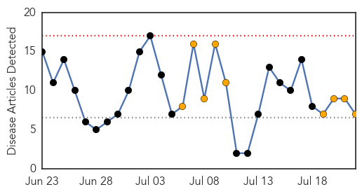
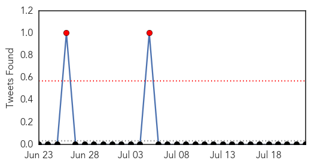

West Nile Virus
30-Day Web Trend
7 alerts, 2 warnings

30-Day Twitter Trend
0 alerts, 0 warnings

Article Locations

Article Confidences

Top Articles:
- 0.990
- California records first West Nile death of the year
- 0.984
- Louisiana sees first West Nile cases of 2015
- 0.979
- Prime West Nile season sees few positive mosquitoes
- 0.975
- Grab the bug spray: Mosquitoes breeding prolifically in York County
- 0.964
- Dallas County reports its first human West Nile case of season
- 0.936
- Get Healthy: Buzz off! Carson City combats mosquitoes
- 0.924
- Mosquito pool tests positive for West Nile virus in #Boulder #WestNile
- 0.911
- Protect against West Nile virus
- 0.906
- West Nile found in Allen County
- 0.897
- First West Nile death a reminder to be vigilant
- 0.887
- First West Nile Virus Death Of 2015 Confirmed In California
- 0.883
- Health officials urge to remove standing water to prevent spread of WNV
- 0.864
- Pool of Mosquitoes in Wahpeton Tests Positive for West Nile Virus
- 0.777
- First West Nile Death in California
- 0.583
- First Horse Infected With West Nile This Year
Top Tweets:
-
No tweets found for Jul 22, 2015
Dengue Fever
30-Day Web Trend
0 alerts, 9 warnings

30-Day Twitter Trend
2 alerts, 0 warnings

Article Locations

Article Confidences

Top Articles:
- 0.999
- No Respite From Dengue, Chikungunya
- 0.990
- Communicable diseases on the rise in Kochi
- 0.916
- 22.07.09 Dengue detected among IDPs in Vavuniyaa
- 0.822
- Taiwan reports 38 ‘locally acquired’ dengue cases in past week, health officials mobilize to support elimination of mosquito breeding sites
- 0.810
- American Samoans told to throw out stagnant water to curb dengue
- 0.699
- Study spots where dengue mosquitoes breed on island
- 0.647
- Italy warns tourists to refrain from fountain splashing
Top Tweets:
-
No tweets found for Jul 22, 2015